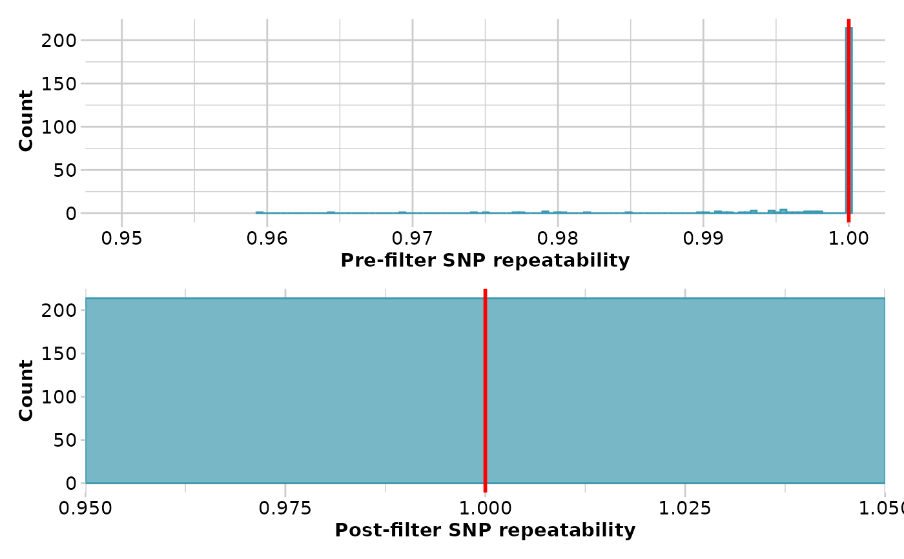
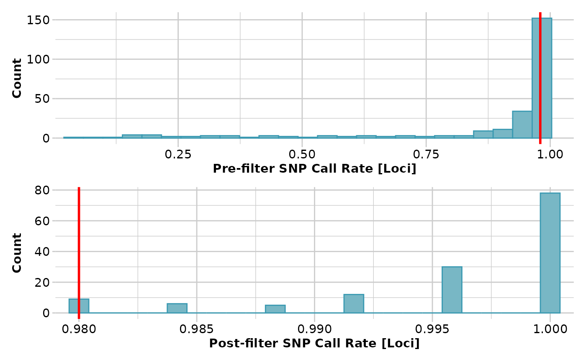

gl2fasta.RdConcatenated sequence tags are useful for phylogenetic methods where information on base frequencies and transition and transversion ratios are required (for example, Maximum Likelihood methods). Where relevant, heterozygous loci are resolved before concatenation by either assigning ambiguity codes or by random allele assignment.
gl2fasta(
x,
method = 1,
outfile = "output.fasta",
outpath = tempdir(),
probar = FALSE,
verbose = NULL
)Name of the genlight object containing the SNP data [required].
One of 1 | 2 | 3 | 4. Type method=0 for a list of options [method=1].
Name of the output file (fasta format) ["output.fasta"].
Path where to save the output file (set to tempdir by default)
If TRUE, a progress bar will be displayed for long loops [default = TRUE].
Verbosity: 0, silent or fatal errors; 1, begin and end; 2, progress log; 3, progress and results summary; 5, full report [default 2 or as specified using gl.set.verbosity].
A new gl object with all loci rendered homozygous.
Four methods are employed:
Method 1 -- heterozygous positions are replaced by the standard ambiguity codes. The resultant sequence fragments are concatenated across loci to generate a single combined sequence to be used in subsequent ML phylogenetic analyses.
Method 2 -- the heterozygous state is resolved by randomly assigning one or the other SNP variant to the individual. The resultant sequence fragments are concatenated across loci to generate a single composite haplotype to be used in subsequent ML phylogenetic analyses.
Method 3 -- heterozygous positions are replaced by the standard ambiguity codes. The resultant SNP bases are concatenated across loci to generate a single combined sequence to be used in subsequent MP phylogenetic analyses.
Method 4 -- the heterozygous state is resolved by randomly assigning one or the other SNP variant to the individual. The resultant SNP bases are concatenated across loci to generate a single composite haplotype to be used in subsequent MP phylogenetic analyses.
Trimmed sequences for which the SNP has been trimmed out, rarely, by adapter mis-identity are deleted.
The script writes out the composite haplotypes for each individual as a
fastA file. Requires 'TrimmedSequence' to be among the locus metrics
(@other$loc.metrics) and information of the type of alleles (slot
loc.all e.g. 'G/A') and the position of the SNP in slot position of the
```genlight``` object (see testset.gl@position and testset.gl@loc.all for
how to format these slots.)
gl <- gl.filter.reproducibility(testset.gl,t=1)
#> Starting gl.filter.reproducibility
#> Processing genlight object with SNP data
#> Removing loci with repeatability less than 1
#>

#> Completed: gl.filter.reproducibility
#>
gl <- gl.filter.overshoot(gl,verbose=3)
#> Starting gl.filter.overshoot
#> Processing genlight object with SNP data
#> Identifying loci for which the SNP has been trimmed with the
#> adaptor
#> No. of loci with SNP falling outside the trimmed sequence: 18
#> 100050384-49-C/G, 100051015-65-C/T, 100052415-21-A/G, 100053200-49-A/T, 100055842-39-G/A, 100056649-23-A/C, 100057527-48-A/G, 100060562-41-T/G, 100067093-24-A/G, 100097015-9-G/T, 100097429-15-T/C, 100097451-8-G/T, 100097541-14-G/A, 100097604-7-C/G, 100097607-15-C/T, 100097869-7-G/C, 100112469-19-C/T, 100114332-43-A/G,
#> Deleting those loci
#> Completed: gl.filter.overshoot
#>
gl <- gl.filter.callrate(testset.gl,t=.98)
#> Starting gl.filter.callrate
#> Processing genlight object with SNP data
#> Warning: Data may include monomorphic loci in call rate
#> calculations for filtering
#> Recalculating Call Rate
#> Removing loci based on Call Rate, threshold = 0.98
#>

#> Completed: gl.filter.callrate
#>
gl <- gl.filter.monomorphs(gl)
#> Starting gl.filter.monomorphs
#> Processing genlight object with SNP data
#> Identifying monomorphic loci
#> Removing monomorphic loci and loci with all missing
#> data
#> Completed: gl.filter.monomorphs
#>
gl2fasta(gl, method=1, outfile='test.fasta',verbose=3)
#> Starting gl2fasta
#> Processing genlight object with SNP data
#> Assigning ambiguity codes to heterozygote SNPs, concatenating trimmed sequence
#> Removing loci for which snp position is outside the length of the trimmed sequences
#> Removing loci for which SNP position is outside the length of the trimmed sequences
#> Generating haplotypes ... This may take some time
#> Completed: gl2fasta
#>
#> NULL